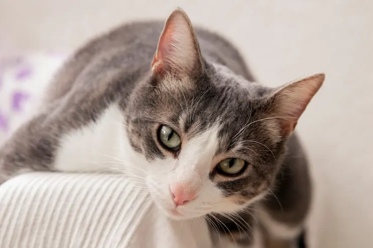

Você entende o que seu gato quer dizer? Mesmo sem falar, os gatos conseguem transmitir muitas informações por meio de seus movimentos, sons e expressões corporais.
| Comportamento | Possível significado | O que observar |
|---|---|---|
| Cauda levantada | Pode indicar receptividade ou confiança | Posição e movimento da cauda |
| Orelha para trás | Pode indicar medo ou irritação | Expressão e postura corporal |
| Ronronar | Pode estar associado ao conforto, mas também a outras situações | Contexto e comportamento |
| Esfregar-se nas pessoas | Pode representar interação social e marcação de cheiro | Situação e frequência |
Utilizado em diferentes formas de comunicação, inclusive com seres humanos.
Pode aparecer em momentos de relaxamento, mas também em situações de desconforto.
Rosnando e silvios podem indicar medo, irritação ou tentativa de afastar algo.

Cuidar é mais do que alimentar. É entender, proteger e amar!
Ter um gato em casa é uma experiência cheia de carinho, descobertas e responsabilidades. Apesar de serem conhecidos por sua independência, os felinos precisam de atenção, cuidados específicos e um ambiente adequado para viverem felizes e saudáveis
Alimentação e hidratação
Uma alimentação equilibrada e água fresca são fundamentais para a saúde e o desenvolvimento do felino.
Higiene e limpeza
A higiene dos pelos, a limpeza da caixa de areia e os cuidados com o ambiente ajudam a manter o gato saudável.
Saúde e prevenção
Consultas veterinárias, vacinação e acompanhamento são essenciais para prevenir doenças.
Amor e bem-estar
Brincadeiras, segurança, estímulos e respeito ao espaço do animal fazem parte de uma vida equilibrada.
Todos esses cuidados estão conectados e são importantes para garantir a qualidade de vida do seu gato. Quando atendemos às necessidades dos felinos, contribuímos para que eles tenham uma vida mais saudável, segura e feliz.
Mas como colocar tudo isso em prática? É isso que vamos descobrir na próxima etapa!
Clique aqui e saiba mais Voltar ao início